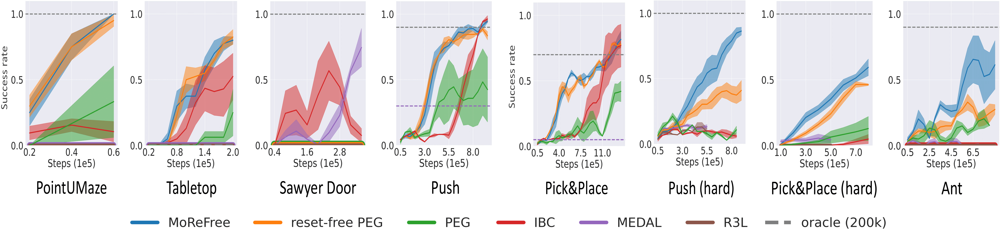

MoReFree:
World Models Increase Autonomy in Reinforcement Learning
Arxiv Preprint
- Zhao Yang
- Thomas M. Moerland
- Mike Preuss
- Aske Plaat
- Edward S. Hu Leiden University, University of Pennsylvania
Abstract
Reinforcement learning (RL) is an appealing paradigm for training intelligent agents, enabling policy acquisition from the agent's own autonomously acquired experience. However, the training process of RL is far from automatic, requiring extensive human effort to reset the agent and environments. To tackle the challenging reset-free setting, we first demonstrate the superiority of model-based (MB) RL methods in such setting, showing that a straightforward application of MBRL can outperform all the prior state-of-the-art methods while requiring less supervision. We then identify limitations inherent to this direct extension and propose a solution called model-based reset-free (MoReFree) agent, which further enhances the performance. MoReFree adapts two key mechanisms, exploration and policy learning, to handle reset-free tasks by prioritizing task-relevant states. It exhibits superior data-efficiency across various reset-free tasks without access to environmental reward or demonstrations while significantly outperforming privileged baselines that require supervision. Our findings suggest model-based methods hold significant promise for reducing human effort in RL.
Motivation
Would MBRL agents excel in the reset-free RL setting?
As an initial attempt, we first evaluate an unsupervised MBRL agent, out-of-the-box, in a reset-free Ant locomotion task. The ant is reset to the center of a rectangular arena, and is tasked with navigating to the upper right corner. The agent is reset only once at the start of training. The evaluation is episodic - the agent is reset at the start of each evaluation episode. For the MBRL agent, we use PEG \citep{hu2023planning}, which was developed to solve hard exploration tasks in the episodic setting. As seen in the figure, PEG, out of the box, outperforms prior state-of-the-art, model-free agent, IBC, tailored for the reset-free setting. On the right, we plot state visitation heatmaps of the agents, where lighter colors correspond to more visitations. The oracle agent, with access to resets, explores the the ``task-relevant'' area between the initial and top right corner, which is ideal for training a policy that succeeds in episodic evaluation. In contrast, PEG exhaustively explores the entire space, as seen through its uniform heatmap. This leads us to ask: how can MBRL agents acquire more task-relevant data in the reset-free setting to improve its performance?
MoReFree: a Model-based Reset-Free agent
Results
We examine model-based backbone and MoReFree on 8 challenging reset-free tasks, ranging from locomtion to manipulation tasks. Two MBRL methods (MoReFree and reset-free PEG) outperform SOTA baselines (IBC, MEDAL, R3L) in 7/8 tasks, and MoReFree beats PEG in 3 more difficult tasks.

Learned behaviors by MoReFree
MoReFree learns to perform 'reset' behaviors, e.g. moving back to the initial state in PointUMaze, bringing the object back to the starting point in Tabletop and Fetch tasks, etc.
What the image is doing... What the image is doing... What the image is doing... What the image is doing...
What the image is doing... What the image is doing... What the image is doing... What the image is doing...
What the image is doing... What the image is doing... What the image is doing... What the image is doing...
What the image is doing... What the image is doing... What the image is doing... What the image is doing...
The website template was borrowed from DoDont.